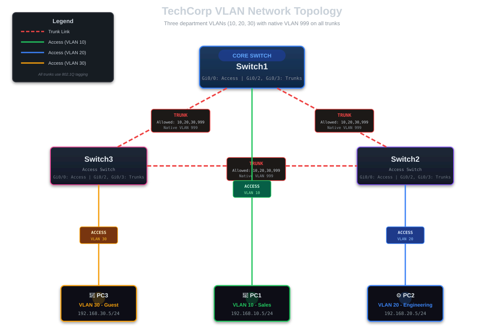

CISCO Virtual LANs (VLANs) Configuration
🔬 HANDS-ON LAB EXERCISE
This is an interactive lab guide! You'll build this network step-by-step in GNS3 or Cisco Packet Tracer. Each section includes the exact commands you need to type. By the end, you'll have a fully functional VLAN network with three isolated departments.
Virtual LANs (VLANs) allow us to logically segment a physical network into multiple broadcast domains. This improves security, reduces network congestion, and simplifies network management. Instead of needing separate physical switches for different departments, we can use VLANs to create logical separations on the same hardware.
Real-World Scenario
TechCorp Office Network Setup
You're the network administrator for TechCorp, a small company with three departments sharing the same office space:
- Sales Department (VLAN 10) - 192.168.10.0/24 - Needs to access customer database
- Engineering Department (VLAN 20) - 192.168.20.0/24 - Handles sensitive product designs
- Guest WiFi (VLAN 30) - 192.168.30.0/24 - Limited internet-only access
Each department should be isolated from the others for security, but all devices are connected to the same physical switches. VLANs are the perfect solution!
Lab Setup
📝 This is a hands-on lab guide! You'll need to build this topology in GNS3 or Packet Tracer as you follow along.
Required Equipment
- GNS3 or Cisco Packet Tracer as the network emulation software
- 3x CISCO switches IOSvL2 15.2 (or equivalent in Packet Tracer)
- 3x Virtual PC simulators (VPCS in GNS3, or PCs in Packet Tracer)
Topology Diagram
Build the following topology in your lab environment:

Connection Details
📌 Access Ports (to PCs)
- Switch1 Gi0/0 → PC1 (Sales - VLAN 10 - 192.168.10.5)
- Switch2 Gi0/0 → PC2 (Engineering - VLAN 20 - 192.168.20.5)
- Switch3 Gi0/0 → PC3 (Guest - VLAN 30 - 192.168.30.5)
🔗 Trunk Ports (between switches)
- Switch1 Gi0/3 ↔ Switch2 Gi0/3 (Carries VLAN 10, 20, 30)
- Switch1 Gi0/2 ↔ Switch3 Gi0/2 (Carries VLAN 10, 20, 30)
- Switch2 Gi0/2 ↔ Switch3 Gi0/3 (Carries VLAN 10, 20, 30)
Understanding VLANs - The Basics
Before we dive into configuration, let's understand the key concepts:
Access Ports vs Trunk Ports
- Access Port: Connects to end devices (PCs, printers, phones). Carries traffic for only ONE VLAN. The device doesn't need to know about VLANs.
- Trunk Port: Connects switches together. Carries traffic for MULTIPLE VLANs simultaneously using 802.1Q tagging.
VLAN IDs and Ranges
- VLAN 1: Default VLAN (all ports are in VLAN 1 by default)
- VLANs 2-1001: Normal range VLANs
- VLANs 1002-1005: Reserved for Token Ring and FDDI
- VLANs 1006-4094: Extended range VLANs
Initial Switch Setup
First, let's set hostnames on our switches for clarity. Configure each switch with these commands:
Setting Hostnames
! On Switch 1 Switch> enable Switch# configure terminal Switch(config)# hostname Switch1 Switch1(config)# exit ! Repeat for Switch2 and Switch3
Next, let's verify the default VLAN configuration. By default, all ports are in VLAN 1. Run this command:
Check Default VLAN Configuration
Switch1# show vlan brief ! You should see all ports (Gi0/0, Gi0/1, Gi0/2, Gi0/3) in VLAN 1 ! Status should show "active"
Creating VLANs
Now we'll create our three departmental VLANs. We need to create these VLANs on ALL switches in our network:
Creating VLANs - Commands
! Run on ALL THREE SWITCHES (Switch1, Switch2, Switch3) Switch# configure terminal vlan 10 name SALES vlan 20 name ENGINEERING vlan 30 name GUEST vlan 999 name BLACKHOLE end
⚠️ Important: You must create these VLANs on ALL three switches! Repeat the above commands on Switch2 and Switch3.
After creating VLANs on all switches, verify they were created successfully:
Verify VLAN Creation
Switch1# show vlan brief ! Expected (example) output: VLAN Name Status Ports ---- -------------------------------- --------- ------------------------------- 1 default active Gi0/1 10 SALES active Gi0/0 20 ENGINEERING active 30 GUEST active 999 BLACKHOLE active
Assigning Access Ports to VLANs
Now we'll assign specific switch ports to each VLAN. These will be access ports where our end devices connect.
Switch1 Access Port Configuration
Assign the access port for PC1 only (per topology):
- GigabitEthernet0/0 → VLAN 10 (Sales PC)
Configuring Access Port - Switch1
Switch1# configure terminal interface gigabitEthernet 0/0 description PC1 - Sales switchport mode access switchport access vlan 10 spanning-tree portfast end
Switch2 Access Port Configuration
- GigabitEthernet0/0 → VLAN 20 (Engineering PC)
Configuring Access Port - Switch2
Switch2# configure terminal interface gigabitEthernet 0/0 description PC2 - Engineering switchport mode access switchport access vlan 20 spanning-tree portfast end
Switch3 Access Port Configuration
- GigabitEthernet0/0 → VLAN 30 (Guest WiFi PC)
Configuring Access Port - Switch3
Switch3# configure terminal interface gigabitEthernet 0/0 description PC3 - Guest WiFi switchport mode access switchport access vlan 30 spanning-tree portfast end
✅ Expected Result: After configuration, only Switch1 Gi0/0 carries VLAN 10 access traffic. Switch2 Gi0/0 carries VLAN 20, and Switch3 Gi0/0 carries VLAN 30. All other links between switches will be trunks.
Configuring Trunk Ports
Trunk ports allow multiple VLANs to traverse between switches. We need to configure the links between our switches as trunk ports.
Understanding 802.1Q Tagging
When a frame travels across a trunk link, the switch adds a 4-byte VLAN tag to identify which VLAN the frame belongs to. The receiving switch reads this tag and forwards the frame to the appropriate VLAN.
Configuring Trunk Ports on Switch1
Switch1# configure terminal ! Configure Gi0/2 as trunk (connects to Switch3) interface gigabitEthernet 0/2 description TRUNK to Switch3 gi0/2 switchport mode trunk switchport trunk native vlan 999 switchport trunk allowed vlan 10,20,30,999 switchport nonegotiate exit ! Configure Gi0/3 as trunk (connects to Switch2) interface gigabitEthernet 0/3 description TRUNK to Switch2 gi0/3 switchport mode trunk switchport trunk native vlan 999 switchport trunk allowed vlan 10,20,30,999 switchport nonegotiate exit end
Switch2 Trunk Configuration
Now configure the trunk ports on Switch2:
Configuring Trunk Ports on Switch2
Switch2# configure terminal ! Configure Gi0/2 as trunk (connects to Switch3) interface gigabitEthernet 0/2 description TRUNK to Switch3 gi0/3 switchport mode trunk switchport trunk native vlan 999 switchport trunk allowed vlan 10,20,30,999 switchport nonegotiate exit ! Configure Gi0/3 as trunk (connects to Switch1) interface gigabitEthernet 0/3 description TRUNK to Switch1 gi0/3 switchport mode trunk switchport trunk native vlan 999 switchport trunk allowed vlan 10,20,30,999 switchport nonegotiate exit end
Switch3 Trunk Configuration
Finally, configure the trunk ports on Switch3:
Configuring Trunk Ports on Switch3
Switch3# configure terminal ! Configure Gi0/2 as trunk (connects to Switch1) interface gigabitEthernet 0/2 description TRUNK to Switch1 gi0/2 switchport mode trunk switchport trunk native vlan 999 switchport trunk allowed vlan 10,20,30,999 switchport nonegotiate exit ! Configure Gi0/3 as trunk (connects to Switch2) interface gigabitEthernet 0/3 description TRUNK to Switch2 gi0/2 switchport mode trunk switchport trunk native vlan 999 switchport trunk allowed vlan 10,20,30,999 switchport nonegotiate exit end
✅ Summary: All trunk ports are now configured on all three switches:
- Switch1 Gi0/2 ↔ Switch3 Gi0/2 - Trunk carrying VLANs 10, 20, 30
- Switch1 Gi0/3 ↔ Switch2 Gi0/3 - Trunk carrying VLANs 10, 20, 30
- Switch2 Gi0/2 ↔ Switch3 Gi0/3 - Trunk carrying VLANs 10, 20, 30
Verify trunk configuration with these commands:
Verify Trunk Ports
Switch# show interfaces trunk ! Expected output (highlights): Port Mode Encapsulation Status Native vlan Gi0/2 on 802.1q trunking 999 Gi0/3 on 802.1q trunking 999 Port Vlans allowed on trunk Gi0/2 10,20,30,999 Gi0/3 10,20,30,999 Port Vlans in spanning tree forwarding state and not pruned Gi0/2 10,20,30 Gi0/3 10,20,30 ! Deep dive per-port: Switch# show interfaces gi0/2 switchport Switch# show interfaces gi0/3 switchport
IP Addressing the VLANs
Now let's assign IP addresses to our PCs in each VLAN. In GNS3 VPCS or Packet Tracer, configure:
PC IP Configuration
! Sales PC (connected to Switch1 Gi0/0 - VLAN 10) PC1> ip 192.168.10.5 255.255.255.0 PC1> save ! Engineering PC (connected to Switch2 Gi0/0 - VLAN 20) PC2> ip 192.168.20.5 255.255.255.0 PC2> save ! Guest PC (connected to Switch3 Gi0/0 - VLAN 30) PC3> ip 192.168.30.5 255.255.255.0 PC3> save
Verify the IP configuration on each PC:
Verify IP Addresses
PC1> show ip NAME : PC1[1] IP/MASK : 192.168.10.5/24 GATEWAY : 0.0.0.0 DNS : MAC : 00:50:79:66:68:00
Testing VLAN Isolation
The beauty of VLANs is that devices in different VLANs cannot communicate without routing. Let's test this!
Test 1: Ping Between Different VLANs (Should FAIL)
Try to ping from Sales PC (VLAN 10) to Engineering PC (VLAN 20):
Test VLAN Isolation
PC1> ping 192.168.20.5 ! Expected result: FAILURE ! You should see: host (192.168.20.5) not reachable ! OR timeout messages like: 84 bytes from 192.168.20.5 icmp_seq=1 timeout
✅ Success! The ping fails because VLANs are properly isolating our departments. Sales (VLAN 10) cannot access Engineering (VLAN 20) systems.
Test 2: What About Same VLAN?
For this test, you would need two PCs in the same VLAN. If you want to test:
- Add another PC to VLAN 10 with IP 192.168.10.6
- Ping from 192.168.10.5 to 192.168.10.6
- It should work! Same VLAN = same broadcast domain
Important Verification Commands
Essential VLAN Commands
# View all VLANs show vlan brief # Verify trunk summary show interfaces trunk # Inspect trunk details on specific ports show interfaces gi0/2 switchport show interfaces gi0/3 switchport # Check access ports show interfaces gi0/0 switchport # View running configuration (for descriptions, portfast, etc.) show running-config interface gi0/0 show running-config interface gi0/2 show running-config interface gi0/3
Run these commands on your switches to verify everything is working correctly.
Native VLAN Policy
The native VLAN is the VLAN carried untagged on a trunk. As a security best practice, this guide standardizes on native VLAN 999 (BLACKHOLE) on every trunk and explicitly allows it on trunks.
Native VLAN Standard (Already Applied Above)
interface gi0/2 switchport trunk native vlan 999 switchport trunk allowed vlan 10,20,30,999 switchport nonegotiate ! interface gi0/3 switchport trunk native vlan 999 switchport trunk allowed vlan 10,20,30,999 switchport nonegotiate
⚠️ Security Note: Avoid VLAN 1 on trunks; use a dedicated, unused native VLAN (999) consistently across all trunks on both ends.
Important: The native VLAN must match on both ends of every trunk, otherwise you'll get a mismatch warning.
VLAN Security Best Practices
- Don't use VLAN 1: Change the native VLAN and don't use VLAN 1 for user traffic
- Disable unused ports: Shut down ports that aren't in use and assign them to an unused VLAN
- Explicitly configure trunk ports: Don't rely on DTP (Dynamic Trunking Protocol) - manually configure trunks
- Prune unnecessary VLANs: Only allow required VLANs on trunk links
- Document VLAN assignments: Keep clear records of which VLANs are used where
Common Troubleshooting Scenarios
Problem: Devices in same VLAN can't communicate
- Verify both devices are in the same VLAN:
show vlan brief - Check if the connecting port is correctly assigned:
show interfaces switchport - Verify IP addresses are in the same subnet
- Check if trunk ports are configured correctly between switches
Problem: Trunk not passing VLAN traffic
- Verify trunk is established:
show interfaces trunk - Check allowed VLANs on trunk:
show interfaces gi0/3 trunk - Verify native VLAN matches on both ends
- Check for encapsulation mismatches (dot1q vs ISL)
Problem: Native VLAN mismatch warning
You might see this console message:
%CDP-4-NATIVE_VLAN_MISMATCH: Native VLAN mismatch discovered on GigabitEthernet0/3 (999), with Switch2 GigabitEthernet0/3 (1).
Solution: This means the native VLAN is configured differently on both ends of the trunk. Fix by ensuring both switches have the same native VLAN configured on both ends of the trunk link.
Advanced Configuration: Voice VLANs
For IP phones, Cisco switches support voice VLANs, allowing both data and voice traffic on the same port:
Configuring Voice VLAN
Switch(config)# interface gigabitEthernet 0/5 Switch(config-if)# switchport mode access Switch(config-if)# switchport access vlan 10 Switch(config-if)# switchport voice vlan 40
This configuration allows a PC connected to the phone to be in VLAN 10, while the phone itself communicates on VLAN 40.
Deleting VLANs (Be Careful!)
If you need to remove a VLAN, use caution as any ports assigned to that VLAN will become inactive:
Deleting a VLAN
Switch(config)# no vlan 30 # To delete all VLANs and reset (dangerous!) Switch# delete flash:vlan.dat Switch# reload
Summary
In this guide, we've covered:
- ✓ What VLANs are and why they're essential for network segmentation
- ✓ Creating VLANs with names and IDs
- ✓ Configuring access ports for end devices
- ✓ Setting up trunk ports for inter-switch communication
- ✓ Understanding 802.1Q tagging and native VLANs
- ✓ Testing VLAN isolation and connectivity
- ✓ Security best practices for VLAN deployment
- ✓ Troubleshooting common VLAN issues
VLANs are a fundamental networking concept. In our next guides, we'll build on this by covering Inter-VLAN Routing (allowing controlled communication between VLANs) and VLAN Access Control Lists for granular security policies.
Remember: VLANs provide logical segmentation, not physical security. For complete isolation, always implement proper firewall rules and access controls!